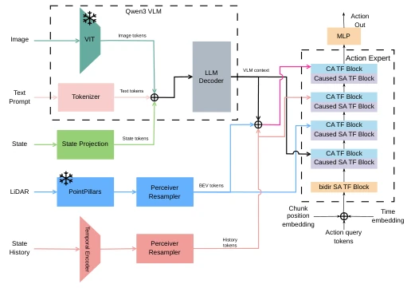
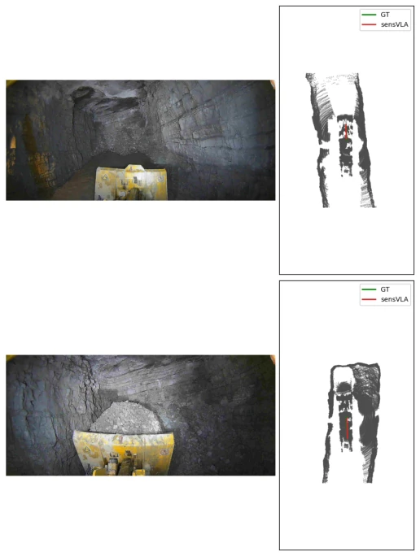

This paper both pours cold water on and offers a ladder to the heavy machinery VLA community. The authors did not blindly stack large models; instead, they treated Qwen3 as the semantic brain and BEV as the spatial cerebellum, forcibly fusing them through cross-attention. Although 'spatial grounding' sounds appealing, essentially it solves an old problem: RGB cannot perceive distance well, while LiDAR lacks semantics. They feed BEV features directly to the action expert rather than stuffing them into the language decoder; this move is quite clever and saves token budget. However, the 28% improvement mainly relies on the loading scenario; the improvement in the driving scenario is limited, indicating that LiDAR is less useful in open areas than near stockpiles. Additionally, while a small model like Qwen3-2B is considered 'lightweight' in the industry, can it truly withstand the complex dynamics of heavy machinery? The data volume of 200k chunks looks substantial, but the real-world collection cost is significant, and generalization still depends on follow-up work. In short, this is a pragmatic 'half-baked' fusion; it is more reliable than pure end-to-end but still far from a general VLA.
Autonomous wheeled loader control is a tough nut to crack, requiring understanding of semantics (e.g., 'bucket') as well as geometry (e.g., 'stockpile distance'). Although existing VLA models [1]–[3] have strong semantics, direct migration to heavy equipment is difficult because RGB tokens struggle to capture metric spatial information such as distance and bucket ground clearance. Outdoor earthmoving tasks require LiDAR-derived BEV representations to complement missing geometric information. Furthermore, real machine data is limited, and full fine-tuning has low statistical efficiency, necessitating reliance on Parameter-Efficient Fine-Tuning (PEFT). Existing methods either rely on modular pipelines [17]–[19] or fuse BEV within the VLA, compromising language-vision alignment. sensVLA attempts to solve this architectural problem: Where should BEV features go? Directly to the action expert or the language decoder? This determines whether spatial grounding is effective.
sensVLA overall adopts a dual-stream architecture. Inputs include RGB images, text prompts, proprioceptive states, and LiDAR point clouds. The VLM part uses a LoRA-adapted Qwen3-2B, with the ViT encoder frozen and the language decoder truncated to the first 14 layers to retain context features, processing RGB and text to generate VLM context. The LiDAR part uses a frozen PointPillars [4] to encode 0.5 seconds of accumulated point clouds, generating a BEV feature grid. The action expert is a 4-layer Transformer that fuses VLM context, BEV features, and proprioceptive history through heterogeneous cross-attention. The key innovation lies in BEV features not passing through the language decoder, but being routed directly to the action expert via a dedicated cross-attention path, preserving spatial resolution. Action generation adopts Flow-Matching speed regression, predicting 10-step 6-DoF action blocks to avoid discretization artifacts. Training adopts a phased strategy, including adapter unfreezing and state history Dropout to prevent overfitting.
Experiments are based on a real wheeled loader dataset, containing 200k training chunks and 40k validation chunks, covering loading and tunnel driving scenarios. The baseline model removes the BEV path and relies solely on RGB. The evaluation metric is per-step physical RMSE. Results show that sensVLA reduces longitudinal speed RMSE by 28% and displacement error by 9% in the loading scenario, outperforming the baseline. The improvement in the driving scenario is smaller. Robustness tests indicate that when camera input is corrupted or removed, sensVLA's performance degradation is 29% less than the baseline, proving that BEV provides fault tolerance capabilities. Ablation experiments show that removing BEV leads to a significant performance drop (1.18 times), confirming the necessity of spatial grounding. Figure 2 shows a high overlap between the predicted path and the true path, especially under camera occlusion conditions.
其他图片Other Figures

Fig. 1: sensVLA Architecture.

Fig. 2: Qualitative predictions on two validation frames (load- ing approach). On the BEV, the ground-truth 2 s ego-path is drawn in green and sensVLA’s prediction in red.